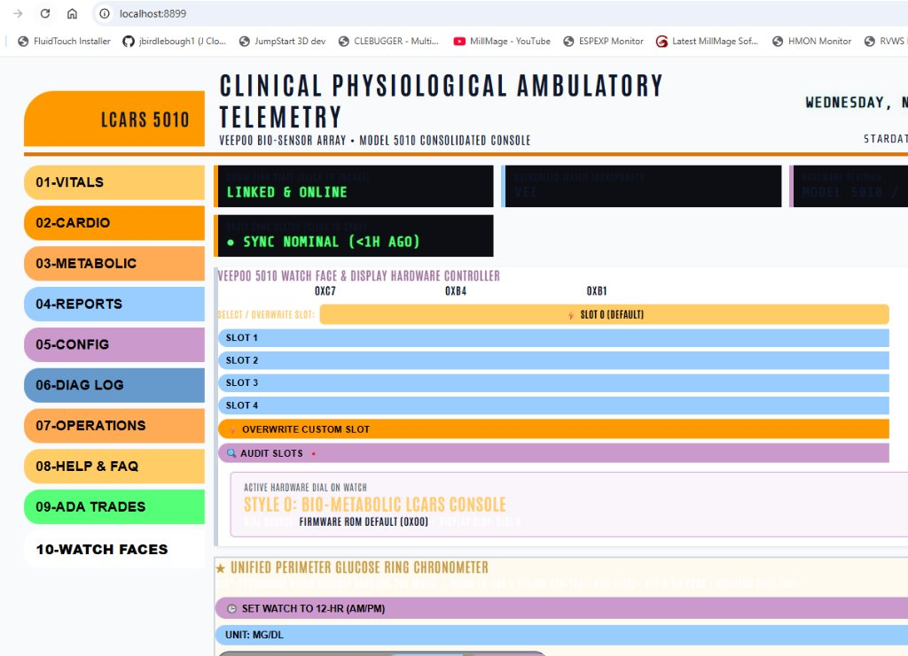

FITAOS 5150 (Veepoo Model 5010) Wearable Transponder Hardware
FITAOS 5150 / MODEL 5010 SMARTWATCH HARDWARE
Hardware architecture, physical design, and 5-sensor biosensing array of the FITAOS 5150 (Veepoo Model 5010) smartwatch.
-
1.39-inch HD Display & Alloy Chassis: Vibrant, high-contrast touch screen with physical rotary crown for senior-friendly tactile navigation.
-
Optical Biosensing Array: Green, Red, and Infrared photoplethysmography sensors calculate non-invasive continuous glucose, SpO2, and heart rate.
-
Dual Thermistors & ECG Electrodes: Two contact thermistors distinguish core vs skin temperature; dual electrodes compute PWTT blood pressure.
-
Magnetic Rapid Charging & 7-Day Battery: Efficient power management delivers a full week of continuous ambulatory telemetry on a single charge.
Key Takeaway: An accessible, clinical-grade multisensor wearable capturing 24/7 continuous vitals right on your wrist.